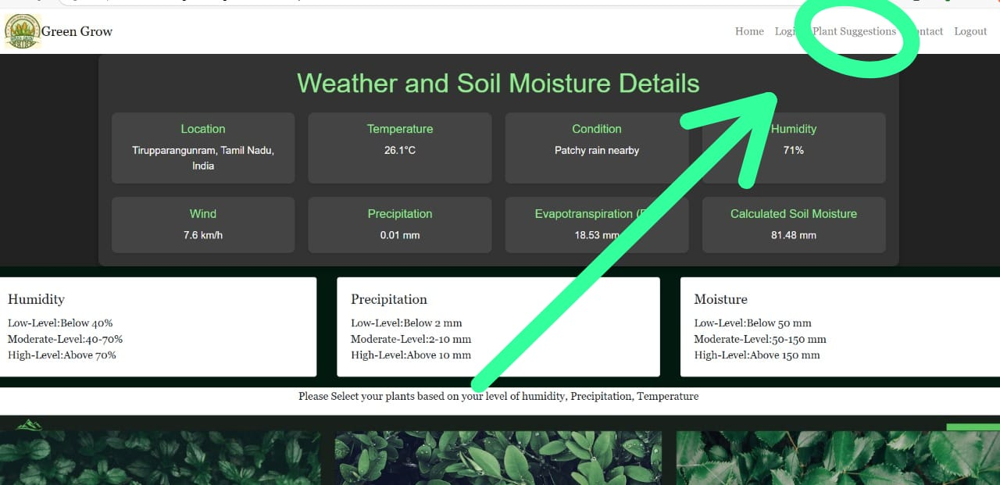
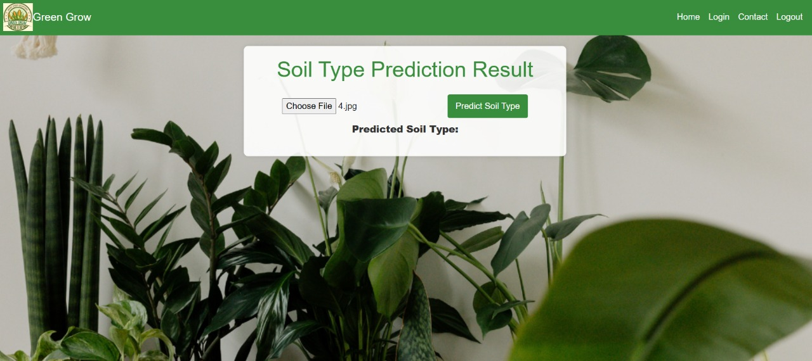
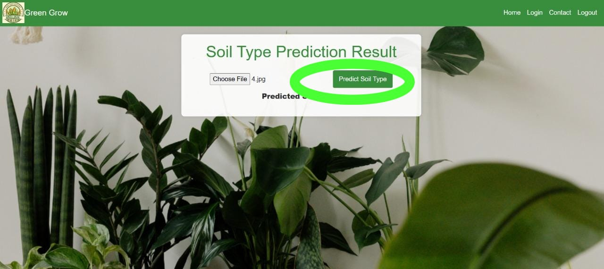

Welcome to the Green Grow Tutorial
Learn how to use the app step by step
Step 1: Check Weather Insights
Once logged in,allow the app to access your location.
After allowing to access the location, the below mentioned contents will be shown.

Step 2: Soil Type Prediction
once logged in, you could able to see "Plant Suggestions" on the top right. Click "Plant Suggestions".
Once you click "Plant Suggestions", you will see a Soil Prediction page which is given below.
Step 3: Soil Type Prediction
Click on the "Choose File" to choose the pic of your soil.
Once the file is uploaded, the file name will be displayed on it's side.
Click on "Predict Soil Type".

Step 4: Plant Suggestions
Based on the soil you have provided, the plants are suggested. Click on "Read More" to get more information about plants.